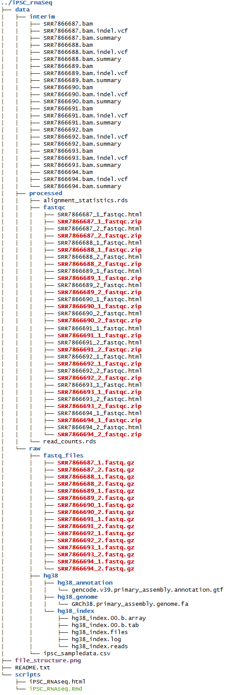
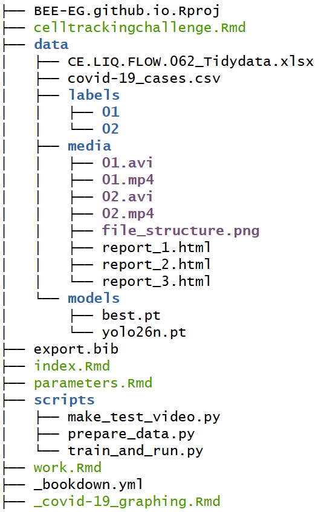
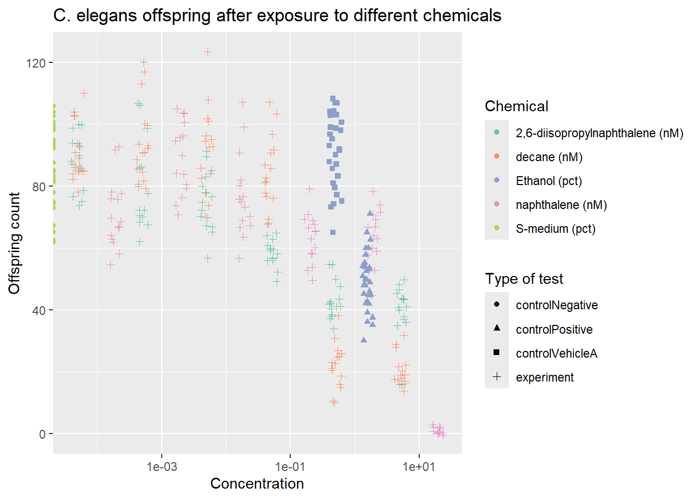
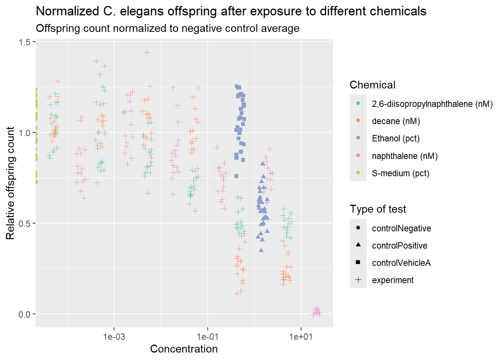

2 Examples of work
2.1 File structure in GO term enrichment analysis from FastQ files
An example of file structure used during an exercise in which a GO enrichment analysis pipeline had to be implemented, and the attached README file
README.TXT
data/interim/: .bam files made during alignment, see scripts/iPSC_RNAseq.Rmd for method.
data/processed/fastqc/: FastQC quality control files per FastQ file.
data/processed/alignment_statistics.rds: Information on alignment performed.
data/processed/read_counts.rds: Alignment read counts per gene, see scripts/iPSC_RNAseq.Rmd for method.
data/raw/fastq_files/: Original zipped fastQ data used for analysis accessed through GEO on 27-03-2026.
data/raw/hg38/: Human reference genome (GRCh38) and annotation files.
data/raw/ipsc_sampledata.csv: Metadata about experiment.
scripts/: Rmarkdown file which shows and describes results and steps taken in order to get to these results.
Developed in R 4.5.3; key dependencies: Rsubread, DESeq2, GOstats, org.Hs.eg.db, tidyverse.

The same Guerilla Analytics principles applied to this repository:

2.2 Visualization of C. elegans experiment data
Here a real data set from the Technical University Utrecht research group Innovative Testing in Life Sciences & Chemistry is visualized. In this data set the toxic effects of 2,6-diisopropylnaphthalene, decane and naphthalene are tested with C. elegans. Controls used in this experiment are:
A positive control for the sensitivity of the test by use of a high concentration of Ethanol (1.5%), which is expected to be measurably lethal. Without this, the sensitivity of this test to detect toxic effects could be called into question
A negative control for the expected baseline offspring with just the S-medium. This sets a baseline with which potentially toxic effects can be described relative to.
A negative/vehicle control for effects of the solvent (0.5% ethanol) in which the chemicals are dissolved. This mostly isolates the toxic effects of the solvent.
The first plot shows absolute offspring counts. In the second plot offspring counts are normalized, which allows for inter-experiment comparison as it negates variability in expected offspring count. In this analysis undefined offspring count values were treated as missing, not as zero.
This normalized data can afterwards be used to fit a dose-response curve. An example workflow for this with use of the drc package is:
Remove the values for the controls from the normalized
plotdata.Select a model (e.g. log-logistic) use in the
drm()function and use that to model the normalized offspring count as a function of compound concentration.Check for adequacy of the fit of this model with a
summary()of the created drc object.Use the
ED()function to extract the IC50 value from the created drc object.
# Import data from excel file and extract necessary columns
rawdata<-read_excel("data/CE.LIQ.FLOW.062_Tidydata.xlsx")%>%
select(RawData,compName,compConcentration,compUnit,expType)
# Fix incorrect datatype in compConcentration data
rawdata$compConcentration<-rawdata$compConcentration%>%parse_number()
# Check for datatypes of columns, all correct
# str(rawdata)
# Plotting shows a number stored as text in excel file imported incorrectly, corrected to neighboring value as it reads the same in source file.
rawdata[259,3]<-rawdata[260,3]
# Creation of table with data for plotting and column combining chemical name and unit
plotdata<-rawdata%>%
mutate(Chemical=paste0(compName," (",compUnit,")"))# Jitterplot creation
jitterplotElegans<-plotdata%>%
ggplot()+
geom_jitter(aes(
x=compConcentration,
y=RawData,
color=Chemical,
shape=expType),
width = 0.1)+
scale_x_log10()+
labs(
x="Concentration",
y="Offspring count",
title = "C. elegans offspring after exposure to different chemicals",
shape="Type of test"
)
jitterplotElegans + scale_color_brewer(palette="Set2")
# Extract negative control and determine mean of count
dataNegative<-plotdata%>%filter(expType=="controlNegative")
negativeMean<-mean(dataNegative$RawData,na.rm = TRUE)
# Normalization of offspring count to mean of negative control
plotdata<-plotdata%>%mutate(NormalizedData=RawData/negativeMean)
# Jitterplot creation
normJitterplotElegans<-plotdata%>%
ggplot()+
geom_jitter(aes(
x=compConcentration,
y=NormalizedData,
color=Chemical,
shape=expType),
width = 0.1)+
scale_x_log10()+
labs(
x="Concentration",
y="Relative offspring count",
title = "Normalized C. elegans offspring after exposure to different chemicals",
subtitle = "Offspring count normalized to negative control average",
shape="Type of test"
)
normJitterplotElegans + scale_color_brewer(palette="Set2")
2.3 R code reproducibility
Here the reproducibility of a publication’s disclosed R code is judged with the help of the criteria used by Sumner et al. (2020).
The article is: Dynamic interactions of influenza viruses in Hong Kong during 1998-2018 (Yang, Lau, and Cowling 2020)
The authors model the transmission dynamics in influenza types in Hong Kong and relate it to epidemic effects on the population.
They do this by looking at reported influenza A(H1N1), B(H3N3) and B cases. This data is then used to model the susceptibility of the population to each strain and the R0 of each strain. This relation is then used to determine cross-immunity between strains after infection. Further, moments of antigenic evolution are estimated based upon increases in population susceptibility.
| Transparency criteria | Response |
|---|---|
| Study Purpose | Present |
| Data Availability Statement | Present |
| Data Location | External repository |
| Study Location | Present; Hong Kong |
| Author Review | Tier 4, filled out ORCID |
| Ethics Statement | Not present |
| Funding Statement | Present |
| Code Availability | Present |
According to the criteria posed by Sumner et al. (2020). this article is highly transparent, however the disclosed code not so much.
The R code given with this publication includes the epidemiological model and the file used to analyze each step performed in the model. The code to generate the graphs present in the article are not present.
There are several issues with the way the R code and data used is disclosed:
The code to create the graphs and tables present in the article are not present.
There is unused code in comment blocks, and dev comments that serve no purpose to understand the code (“typo?”).
The dataset has no metadata elaborating on what is present within it, only a title.
The readme explains nothing about the function of each file, code or data, present and only refers back to the article.
The function used to run the model
cross.sirs.fast()has several poorly documented variables:“input: tm_strt: starting time; tm_end: ending time; tm_step: time step” includes no information on their units.
A
realdata=FALSEflag is completely undocumented.S0,I0, andNare documented on the same line as ifNis descriptive for the others
None of the settings used for the algorithms are mentioned in the supplementary file or the paper.
As such, the code is somewhat readable at a 3 out of 5 as explanatory code comments are present. However it is absolutely not reproducible without extensive knowledge of these algorithms and I would rate its reproducibility at a 1 out of 5.
2.4 Leptospira and its genome
Below is a short literature study on leptospira and its genome to show my knowledge on how to use a bibliography.
Leptospira is a genus of spirochaetal bacteria within the phylum Spirochaetota, divided into pathogenic and free-living saprophytic species (Fouts et al. 2016). Pathogenic species, most prominently L. interrogans, cause leptospirosis, a zoonotic disease transmitted through contact with water or soil contaminated by the urine of infected reservoir animals, with rodents serving as the principal reservoir (Fouts et al. 2016). The clinical spectrum ranges from self-limiting febrile illness to severe Weil’s disease, characterized by acute renal renal failure, pulmonary haemorrhage and hepatic dysfunction (Ren et al. 2003). The global distribution, broad host range, and re-emerging status of leptospirosis have motivated extensive genomic investigation of the genus.
The first complete genome of a pathogenic Leptospira was sequenced by Ren et al. (2003) for L. interrogans virulent serovar Lai, establishing the bipartite chromosome architecture now recognised as characteristic of the genus: a large chromosome (CI) of approximately 4.3 Mb and a small chromosome (CII) of approximately 350 kb, both circular. Subsequent sequencing of serovar Copenhageni by Nascimento et al. (2004) confirmed the conservation of overall genome organisation between serovars while identifying serovar-specific divergence in loci governing lipopolysaccharide biosynthesis and outer membrane protein composition. The genome encodes a disproportionately large number of lipoproteins and chemotaxis-related genes relative to other spirochaetes, consistent with the organism’s capacity to colonize both environmental reservoirs and mammalian hosts (Ren et al. 2003; Nascimento et al. 2004).
Comparative genomics across the genus has clarified the genomic basis of pathogenicity. Picardeau et al. (2008) sequenced the saprophyte L. biflexa, revealing a set of genes present in pathogenic species abut absent in the environmental strain, including putative haemolysins, adhesins, and protein bearing leucine-rich repeat (LRR) domains associated with host-pathogen interactions. A large-scale comparative analysis by Fouts et al. (2016) further identified over 1500 gene families exclusive to leptospiral immunoglobulin-like proteins, which mediate adhesion to host extracellular matrix. In contrast, L. borgpetersenii displays extensive genome reduction relative to L. interrogans, with accumulated pseudogenes and insertion sequence elements reflecting adaptation to obligate host-dependence and loss of environmental survival capacity (Bulach et al. 2006). This pattern of reductive evolution is consistent with niche restriction and has direct implications for identifying pathogen-specific antigens suitable for vaccine and diagnostic development (Fouts et al. 2016)